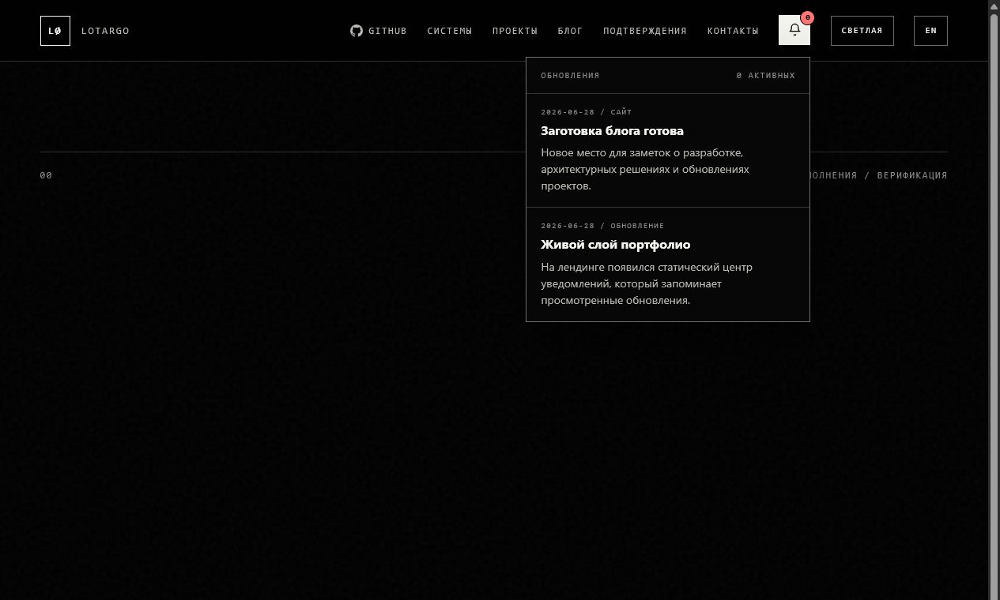
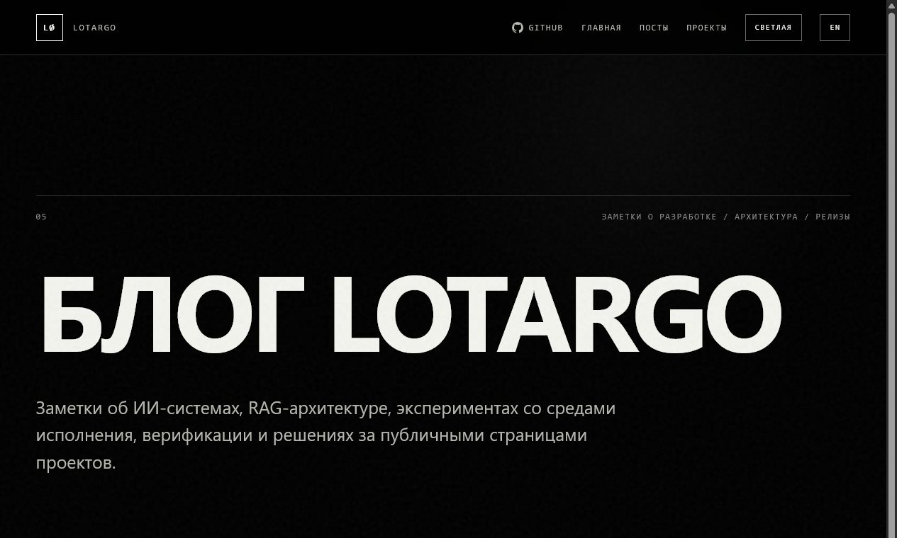

How we added the blog and living updates
This first article is both an update note and a reusable sample for future technical posts.
We added a notification center to the landing page and a dedicated blog section with markdown sources, rendered HTML pages, and a place for post assets.

Publishing workflow
Instead of adding a protected admin panel, the blog uses a local publishing workflow: write markdown, preview locally, commit the finished version, and let GitHub Pages update the site.
Blog structure
Markdown source files live in blog/content/, rendered post pages live in blog/posts/, and images for future notes can live in blog/assets/.

blog/
index.html
posts/
first-note.html
content/
blog-launch.ru.md
blog-launch.en.md
assets/
landing-notifications.png
blog-index.pngLaTeX example
Technical articles often need formulas. For example, the publishing cost can be described as:
What to copy next
For a new post, create RU and EN markdown files, put images into the asset folder, preview the page locally, and commit the finished version.